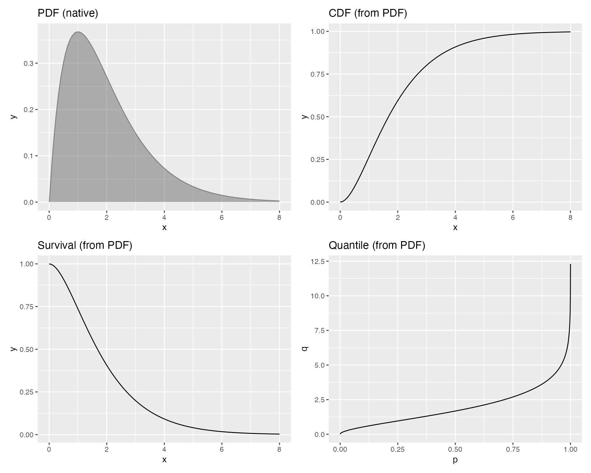
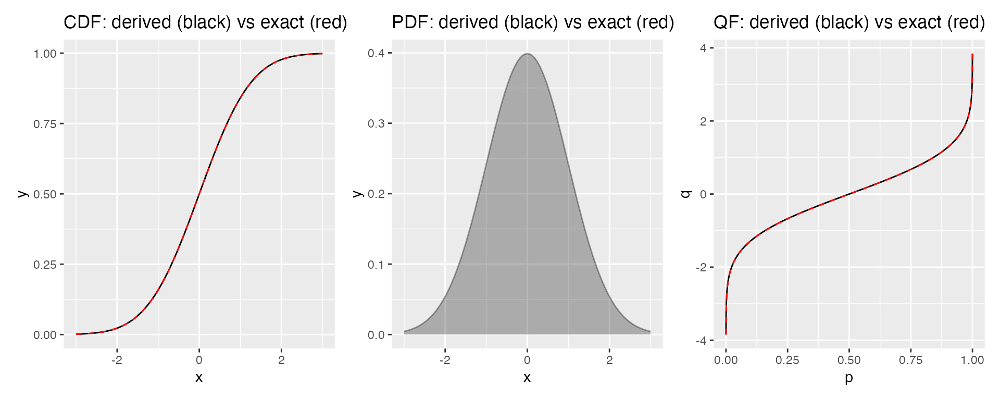
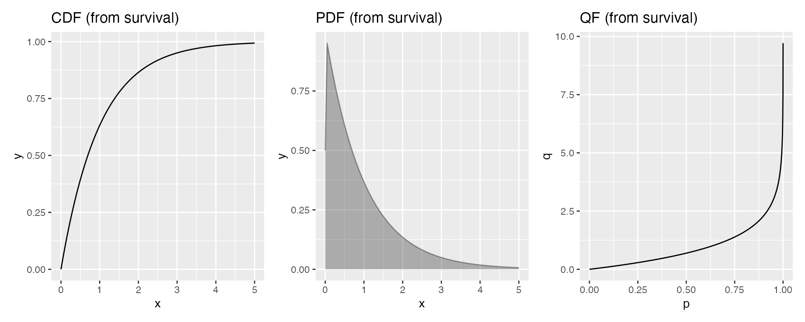
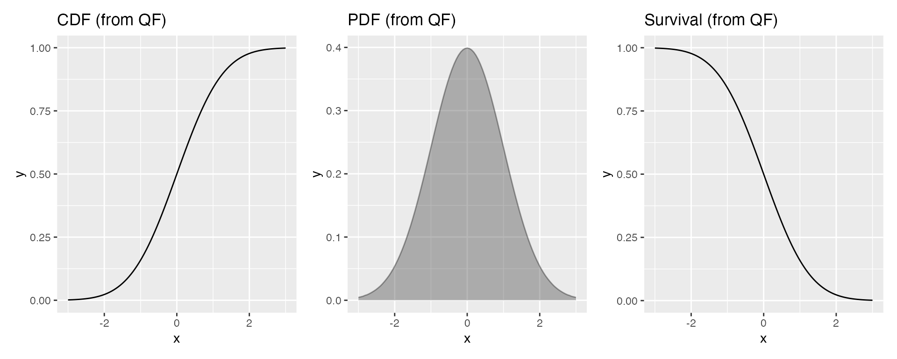

Cross-Conversion Between Distribution Functions
Source:vignettes/cross-conversion.Rmd
cross-conversion.RmdMotivation
A probability distribution is fully characterized by any one of its
standard functions: the PDF
,
CDF
,
survival function
,
quantile function
,
or hazard function
.
In R, base distribution families provide all of these
(e.g. dnorm, pnorm, qnorm), but
user-defined distributions or distributions from other packages may only
supply one or two.
ggfunction lets you pass whichever function type you
have to whichever geom you need. For example, if you have a PDF but want
to plot the CDF, you can write geom_cdf(pdf_fun = my_pdf)
and the conversion happens automatically. This vignette explains which
conversions are available, how they work internally, and what accuracy
to expect.
Available conversions
Each probability geom accepts its native function type via
fun and one or more alternate types via named parameters.
The table below summarizes the routes:
| Geom | Native (fun) |
Alternates |
|---|---|---|
geom_pdf() |
cdf_fun (differentiate), survival_fun
(
then differentiate), qf_fun (interpolate then
differentiate) |
|
geom_cdf() |
CDF |
pdf_fun (integrate), survival_fun
(),
qf_fun (interpolate) |
geom_survival() |
Survival |
cdf_fun
(),
pdf_fun (integrate, then
),
qf_fun (interpolate, then
) |
geom_qf() |
Quantile |
cdf_fun (root-find), pdf_fun (integrate,
then root-find), survival_fun
(,
then root-find) |
geom_hf() |
Hazard |
pdf_fun + cdf_fun (ratio, or just one),
survival_fun
(
then differentiate), qf_fun (interpolate then
differentiate) |
geom_cdf_discrete() |
CDF |
pmf_fun (cumulative sum), survival_fun
() |
geom_survival_discrete() |
Survival |
cdf_fun
(),
pmf_fun (cumsum, then
) |
geom_qf_discrete() |
Quantile |
cdf_fun (invert on support), pmf_fun
(cumsum, then invert), survival_fun
(,
then invert) |
Exactly one function source must be provided; supplying more than one
(e.g. both fun and pdf_fun) is an error.
Example: one PDF, four plots
Suppose you only have the PDF of a Gamma(2, 1) distribution:
my_pdf <- function(x, shape, rate) dgamma(x, shape = shape, rate = rate)
gamma_args <- list(shape = 2, rate = 1)You can plot the PDF, CDF, survival function, and quantile function without ever writing a CDF or quantile function yourself:
p1 <- ggplot() +
geom_pdf(fun = my_pdf, xlim = c(0, 8), args = gamma_args) +
ggtitle("PDF (native)")
p2 <- ggplot() +
geom_cdf(pdf_fun = my_pdf, xlim = c(0, 8), args = gamma_args) +
ggtitle("CDF (from PDF)")
p3 <- ggplot() +
geom_survival(pdf_fun = my_pdf, xlim = c(0, 8), args = gamma_args) +
ggtitle("Survival (from PDF)")
p4 <- ggplot() +
geom_qf(pdf_fun = my_pdf, args = gamma_args) +
ggtitle("Quantile (from PDF)")
(p1 | p2) / (p3 | p4)
How the conversions work
Three internal helper functions perform the numerical conversions. They are not exported, but understanding them helps set expectations for accuracy and performance.
PDF to CDF: numerical integration
Given a PDF , the CDF is
Internally, pdf_to_cdf() evaluates this integral at each
point using R’s stats::integrate(), which applies adaptive
Gauss–Kronrod quadrature:
pdf_to_cdf <- function(pdf_fun, lower = -Inf) {
function(x) {
vapply(x, function(xi) {
res <- try(
stats::integrate(pdf_fun, lower = lower, upper = xi,
stop.on.error = FALSE),
silent = TRUE
)
if (inherits(res, "try-error")) NA_real_ else res$value
}, numeric(1))
}
}Each evaluation point requires a separate call to
integrate(), so this is the most computationally expensive
conversion. For distributions with known finite lower bounds (e.g. the
exponential), setting lower = 0 avoids integrating over an
infinite domain and improves both speed and accuracy.
Accuracy. For smooth, well-behaved densities the absolute error is typically below , well within plotting resolution. Densities with singularities (e.g. the Beta(0.5, 0.5) density, which diverges at 0 and 1) may produce larger errors near the singular points.
CDF to PDF: central finite differences
Given a CDF
,
the PDF is its derivative
.
Internally, cdf_to_pdf() approximates this with a central
difference:
with step size :
cdf_to_pdf <- function(cdf_fun, h = 1e-5) {
function(x) {
(cdf_fun(x + h) - cdf_fun(x - h)) / (2 * h)
}
}This is fast and naturally vectorized—a single call evaluates all grid points at once.
Accuracy. The central difference has truncation error, so with the error is roughly for smooth CDFs. In practice the dominant error source is floating-point cancellation when , which occurs in the extreme tails where the CDF is nearly flat. This is harmless for plotting because the density is negligibly small in those regions.
CDF to quantile function: root-finding
Given a CDF
,
the quantile function solves
for each probability
.
Internally, cdf_to_qf() uses stats::uniroot()
to find the root of
:
cdf_to_qf <- function(cdf_fun, search_lower = -10, search_upper = 10) {
function(p) {
vapply(p, function(pi) {
if (pi <= 0) return(-Inf)
if (pi >= 1) return(Inf)
lo <- search_lower; hi <- search_upper
# Adaptively widen bounds until they bracket the target
for (i in 1:25) {
if (!is.na(cdf_fun(lo)) && cdf_fun(lo) <= pi) break
lo <- lo * 2
}
for (i in 1:25) {
if (!is.na(cdf_fun(hi)) && cdf_fun(hi) >= pi) break
hi <- hi * 2
}
res <- try(
stats::uniroot(function(x) cdf_fun(x) - pi,
lower = lo, upper = hi,
tol = .Machine$double.eps^0.5),
silent = TRUE
)
if (inherits(res, "try-error")) NA_real_ else res$root
}, numeric(1))
}
}The algorithm starts with initial search bounds and adaptively doubles them until the CDF values bracket the target probability. This handles distributions with arbitrary support without requiring the user to specify bounds. The boundary cases and return and directly.
Accuracy. uniroot() converges to
machine precision
(),
so the quantile values are effectively exact. The main cost is one CDF
evaluation per uniroot() iteration (typically 10–20
iterations), applied independently at each probability point.
Survival to CDF: exact arithmetic
Given a survival function , the CDF is recovered by simple subtraction:
Internally, survival_to_cdf() wraps this in a
closure:
survival_to_cdf <- function(survival_fun) {
function(x) 1 - survival_fun(x)
}Accuracy. This conversion is exact (up to floating-point rounding), with errors on the order of machine epsilon ().
Quantile function to CDF: interpolation
Given a quantile function
,
the CDF can be recovered by inverting the relationship: evaluate
on a dense grid of probabilities
to get the corresponding
values, then interpolate. Internally, qf_to_cdf() uses
stats::approxfun() with rule = 2 (constant
extrapolation at boundaries):
qf_to_cdf <- function(qf_fun, n = 10000) {
p_grid <- seq(1 / (n + 1), n / (n + 1), length.out = n)
x_grid <- qf_fun(p_grid)
stats::approxfun(x_grid, p_grid, rule = 2)
}The grid avoids and (which would map to for unbounded distributions). With grid points, the interpolation error is typically below for smooth distributions.
Accuracy. Linear interpolation on points gives roughly three decimal digits of accuracy. This is more than sufficient for plotting, though downstream differentiation (e.g. to obtain a PDF) amplifies the error by one order of magnitude.
Chained conversions
Some geoms require two conversions in sequence. For example,
geom_qf(pdf_fun = ...) first integrates the PDF to obtain a
CDF (pdf_to_cdf), then inverts that CDF by root-finding
(cdf_to_qf). Each root-finding step calls the derived CDF,
which itself calls integrate(). This double nesting makes
it the most expensive path, but the cost is still modest for the default
evaluation points.
Similarly, geom_survival(pdf_fun = ...) integrates the
PDF to get
,
then computes
.
And when geom_hf() receives only pdf_fun, it
derives the CDF by integration so that it can compute
.
The new survival_fun and qf_fun paths also
produce chains: geom_pdf(survival_fun = ...) computes
(exact), then differentiates to get
.
geom_pdf(qf_fun = ...) interpolates
to get
,
then differentiates. geom_qf(survival_fun = ...) computes
,
then inverts by root-finding.
Accuracy comparison
We can compare derived values against the exact analytic functions to see the conversion error in practice. Here we use the standard normal distribution:
# CDF derived from PDF vs exact
p1 <- ggplot() +
geom_cdf(pdf_fun = dnorm, xlim = c(-3, 3)) +
geom_cdf(fun = pnorm, xlim = c(-3, 3), color = "red", linetype = "dashed") +
ggtitle("CDF: derived (black) vs exact (red)")
# PDF derived from CDF vs exact
p2 <- ggplot() +
geom_pdf(cdf_fun = pnorm, xlim = c(-3, 3)) +
geom_pdf(fun = dnorm, xlim = c(-3, 3), color = "red", alpha = 0) +
ggtitle("PDF: derived (black) vs exact (red)")
# QF derived from CDF vs exact
p3 <- ggplot() +
geom_qf(cdf_fun = pnorm) +
geom_qf(fun = qnorm, color = "red", linetype = "dashed") +
ggtitle("QF: derived (black) vs exact (red)")
p1 | p2 | p3
The derived curves (black) are visually indistinguishable from the exact curves (red dashed), confirming that the numerical methods are accurate enough for plotting.
Example: from a survival function
Suppose you only have the survival function of an exponential distribution:
my_surv <- function(x, rate) 1 - pexp(x, rate = rate)
p1 <- ggplot() +
geom_cdf(survival_fun = my_surv, xlim = c(0, 5), args = list(rate = 1)) +
ggtitle("CDF (from survival)")
p2 <- ggplot() +
geom_pdf(survival_fun = my_surv, xlim = c(0, 5), args = list(rate = 1)) +
ggtitle("PDF (from survival)")
p3 <- ggplot() +
geom_qf(survival_fun = my_surv, args = list(rate = 1)) +
ggtitle("QF (from survival)")
p1 | p2 | p3
Example: from a quantile function
Similarly, if you only have a quantile function:
p1 <- ggplot() +
geom_cdf(qf_fun = qnorm, xlim = c(-3, 3)) +
ggtitle("CDF (from QF)")
p2 <- ggplot() +
geom_pdf(qf_fun = qnorm, xlim = c(-3, 3)) +
ggtitle("PDF (from QF)")
p3 <- ggplot() +
geom_survival(qf_fun = qnorm, xlim = c(-3, 3)) +
ggtitle("Survival (from QF)")
p1 | p2 | p3
Performance considerations
-
Integration (
pdf_to_cdf): calls tointegrate(), each with function evaluations where depends on the integrand’s smoothness. Typically the slowest single conversion. -
Differentiation (
cdf_to_pdf): A single vectorized evaluation—two CDF calls total. Essentially free. -
Root-finding (
cdf_to_qf): calls touniroot(), each requiring CDF evaluations (). Comparable to integration in cost. -
Survival to CDF (
survival_to_cdf): A single vectorized evaluation—one subtraction per point. Essentially free. -
QF to CDF (
qf_to_cdf): One-time cost of evaluating the quantile function on 10,000 grid points to build the interpolation table. After setup, CDF lookups are viaapproxfun(). -
Chained (
pdf_funto quantile): calls tointegrate(). The most expensive path but still completes in under a second for the default .
When speed matters or when working with distributions that have
analytic forms for multiple function types, supplying the native
function directly avoids all conversion overhead. For example,
geom_cdf(fun = pnorm) is faster than
geom_cdf(pdf_fun = dnorm), though both produce visually
identical output.
The discrete case
Discrete geoms (geom_cdf_discrete,
geom_survival_discrete, geom_qf_discrete)
perform exact arithmetic rather than numerical approximation:
- PMF to CDF: cumulative summation of the PMF values over the integer (or explicit) support. This is exact up to floating-point rounding.
- PMF to survival: cumulative summation followed by . Again exact.
- CDF to quantile (discrete): the CDF is evaluated at each support point and the step function is inverted directly. No root-finding is needed.
- Survival to CDF (discrete): on each support point. Exact.
- Survival to quantile (discrete): on each support point, then invert. Exact.
These operations introduce no approximation error, so there is no accuracy trade-off for discrete conversions.